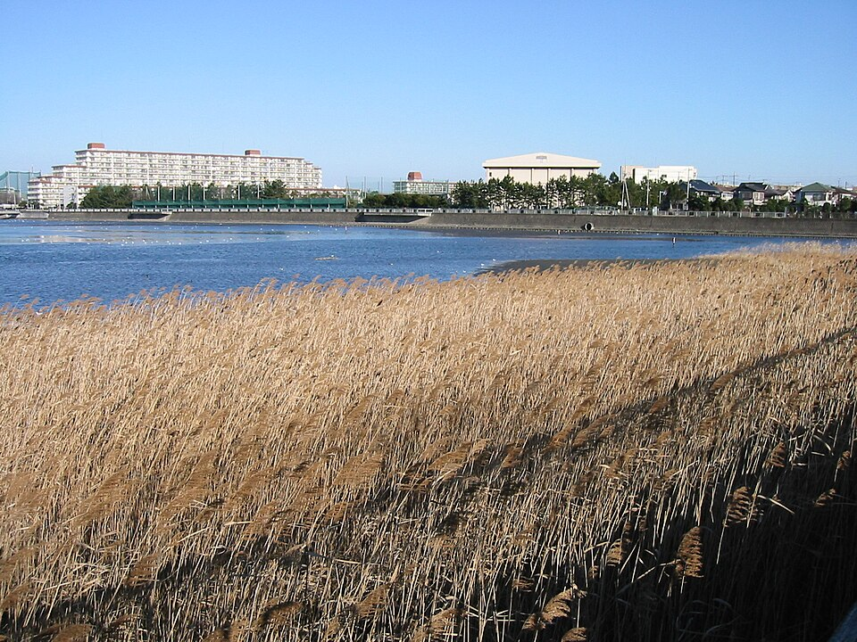
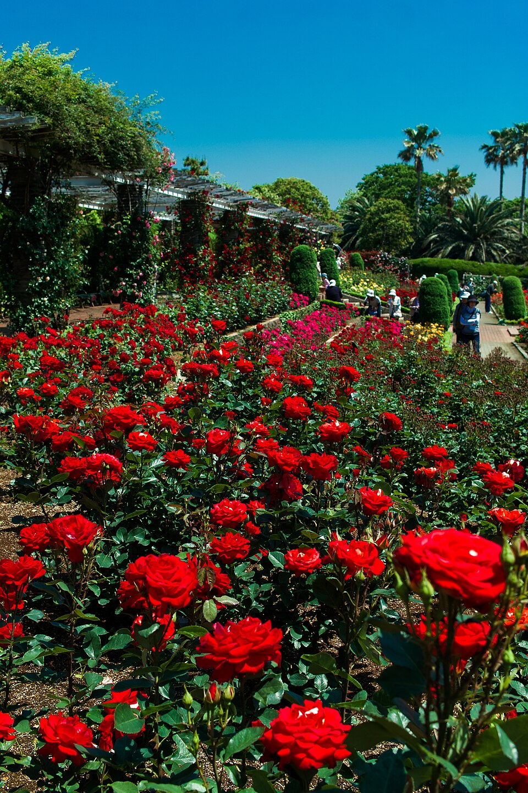

A PLACE TO BREATHEA LITTLE JOURNEY, CLOSE TO TOKYO
海のそばで、
深呼吸する休日。
水辺の鳥を眺めて、街の味を楽しんで。
いつもの毎日に近い場所で、
少しだけ新しい景色に出会う。
01 ABOUT NARASHINO
東京から、ほんの少し。
自然も、街も、
ちょうどいい。
千葉県北西部にある、習志野市。にぎやかな街並みのすぐ向こうに、鳥たちが羽を休める干潟が広がっています。自然に触れたあと、地元の味を楽しんで、街をのんびり歩く。そんな肩の力を抜いた一日が似合うまちです。
習志野の楽しみを見つける都会のとなりに
見つけた、
私のよりみち。
02 LITTLE DISCOVERIES
習志野の、いいところ。
水辺の自然から、街のにぎわいまで。
気の向くままにめぐってみよう。

A GARDEN IN BLOOM急がなくたって、
いい日になる。
03 A DAY WELL SPENT
THE NARASHINO WAY
気ままに歩く、
習志野の一日。
たくさん予定を詰めなくても大丈夫。寄り道を楽しむくらいが、このまちにはちょうどいい。
- MORNING
干潟の風に、会いにいく。
谷津干潟で鳥を探したり、水辺の道を歩いたり。朝の静けさを楽しもう。
- AFTERNOON
街のにぎわいと、地元の味。
津田沼のイオンや地元のお店をのぞいて、お気に入りのひと皿を探してみる。
- WHEN IN SEASON
花の香りに、足を止めて。
季節が合えば谷津バラ園へ。見頃や開園情報は事前にチェック。
04 FIND YOUR WAY HERE
COME AS YOU ARE
思い立った日に、
ふらり習志野へ。
習志野市は千葉県北西部に位置しています。電車やバスでお越しの際は、目的地に合わせて駅や乗り換えをお調べください。
地図で習志野市を見る
STATIONS AROUND TOWN
津田沼駅JR 総武線
↗京成津田沼駅京成本線・千葉線・京成松戸線
↗新津田沼駅京成松戸線
↗新習志野駅JR 京葉線
↗駅名は代表的なアクセス情報です。お出かけ先に合わせてルートをご確認ください。